1998. P. A. Seiden (ed.). Proceedings of the 17th European Colloquium of Arachnology, Edinburgh 1997.
A redescription and renaming of the Tasmanian spider Amphinecta milvina
(Simon, 1903), with descriptions of four new species (Araneae:
Amaurobioidea: Amaurobiidae)
Valerie Todd Davies
Queensland Museum, PO Box 3300, South
Brisbane, Queensland, 4101, Australia
Abbreviation: CL, carapace length; CW,
carapacc width; AL, abctarnen length; AW,
abdomen width. Eyes: AME, anterior median;
ALE, anterior lateral; PME, posterior median;
PLE, posterior lateral. Spinnerets: ALS,
antcrior; PMS, median; PLS, posterior.
Collections: AMNH, Amcrican Museum of
Natural History, New York; MNHP, Museum
National d'Histoire naturelle, Paris; NMV,
Museum of Victoria, Melbourne; QM,
Queensland Museum, Brisbane; QVM, Queen
Victoria Museum, Launceston, Tasrnania; TM,
Tasmanian Museum and Art Ga1Iery, Hobart,
Tasmania. Abbreviations on illustrations are
explained with the figures.
Genus Tasmarubrius
A new genus
Type species: Rubrius milvinus Simon, 1903.
Etymology: A combination of "Tasma", from
Tasmania, and Rubrius.
Description: The reddish-brown carapace which is highest in the cephalic area (Fig. 47), is
almost glabrous; the abdomen is dark brown with a pale cardial area and six paired pale
patches dorsally (Fig. 6); there is a pale mottled
pattern ventrally. Viewed from the top, the
posterior eye row is slightly procurved and the
anterior row straigh t (Figs. 1, 48); from the
front, both eye rows are procurved (Fig. 3).
The AME are smaller than the rest of the eyes. The
chelicerae have two retromarginal and two pro-
marginal teeth (Fig. 5). The labium is Ionger
than wide (Fig. 49).
Legs 4123: all the metatarsi
and tibiae have paired ventral spines; these are
Ionger on the posterior legs. The cuticle is
ridged; feathery hairs are absent. There is a sin-
gle row of trichobothria (Fig. 55) on the
metatarsi and tarsi; the tarsal organ (Fig. 56) is
slit like.
Key to Tasmarubrius species:
Tasmarubrius milvinus (Simon, 1903) new
combination (Figs. 1-10, 61 ; Tab1e l)
Rubrius milvinus Simon, 190 3: 34 (9, Hobart)
Rubrius milvinus Rainbow, 19II: 259
Rubrius milvinus Hickman, 1967: 69, figs.
124-126; p1 xii, fig. 1 (9,d)
Amphinecta milvina Lehtinen, 1967: 213, fig.
142 (9)
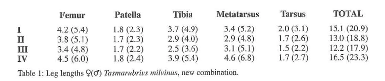
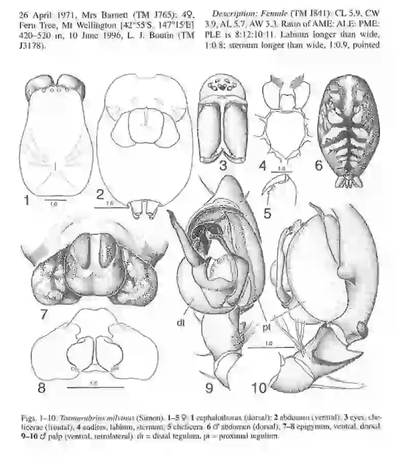
(Fig. 4). Legs 4123 (Table 1).
Preening combs on metatarsi II (one with 7
tines), III (two with 7 tines) and IV (two with 517
tines). Notation of spines. Femora: I. 0II0,
P002; II , DllO , POOl ; lll, Dlll , POOl , ROOl ; IV,
Dill , POOl , ROOl. Tibiae: I, V222; li , Plll ,
V222; lii , DOlO , Pll1 , V222, Rlll; IV, DOOl,
P II1, V222, Rlll. Metatarsi: I, POO I, V221,
ROOl ; 1l P002, V221 , ROOI ; Ill , 0100 , Pl22 ,
V22 1, RI22 ; I V, DllO, Pl12 , V221, Rll2.
The epigynum (Figs. 7-8) is almost twice as wide as
long. The bulbous lateral protuberances appear
to be acellular extrusions blocking and obscuring the gonopores.
A cut across the protuberance
(this had already been done by a previous examiner of the holotype) reveals a key-hole shaped
canal whicb diminishes in size as it progresses
outwards (see below) that appear to be a large
g1andular areas fill the space ventral to the spermathecae.
Length 10.0-14.4.
Male: CL 6.7, CW 5.6, AL 5.4, AW 3.6. A
light brown sclerotized area on the front and the
cardial region of the abdomen, otherwise coloration is similar to the female. Ratio of
AME:ALE:PME:PLE is 9:12:II:12. Labium
slightly Ionger than wide, 1:0.9; sternum Ionger
than wide J :0.8. Legs 4123 (Table 1) .
Preening
combs are present on metatarsi II (6 tines), ill
(717 tines) and IV (5/6 tines). Notation of spines.
Femor a: I, Dill , P002, R001; II, Dill, POOl,
ROOI; III, Dill , POOl , R001 ; IV, DllO , POOl,
ROO 1. Tibiae: I, P II1 , V222; TI , P lll , V222; Ill ,
DOIO, Pll1, V222, Rlll ; IV, DOOl, Plll,
V222, R II 1. Metatarsi: I, PO 12, V221, R002; Jl,
Pll2 , V221, ROJ2; ßl , DOlO , Pll2, V221,
Rll2 ; IV, DOlO , Pl12 , V22 1, Rl12 .
fem. palp
(Figs. 9-10): the proximal tegulum is yellow-
brown, the distal tegulum a deeper yellow-
brown: the median and tegu1ar apophyses are
about the same length. The b1unt paracymbium
arises dorso-retrolaterally and turns at right
angles to lie retroventrally. The tibia is deeply
excavated retrolaterally and has a ventral and
sharper dorsal apophysis. Length II.6-12.8.
Nothing is known of the spider's mating habits.
It is assumed that the virgin females lack lateral
protuberances on the epigynum.
Tasmarubrius pioneer, new species
(Figs. II -19,4 1, 61)
Types: Holotype: , on slopes above Old
Chum Dam, 10-15 km NE Pioneer, NE
Tasmania [41 °03'S, 148°0l'E], 200 m, pitfall
trap, October 1989-April 1990, Forestry (TM
13179). Paratypes: fem., same data as halotype
(TM 13180); 3ä (TM 13 181); (TM 13182); ä,
Nothojagus forest close to Weldborough
[4l0 12'S, 14r54'E], 20-25 February 1993,
P. Cranston, J. Trueman (QM S30272); 2ä
(QM S30273); lOfem., dry sclerophyll, Peters Link
Rd l4l0
08'S , 148°07'E], 22-27 May 1993,
P. Cranston, J. Trueman (QM S30274); 2ä
(QM S30275); 4ä (QM S30276); 4fem. (QM
S30277); fem. (QM S30278); fem., Nothofagus for-
est, 4.4 km SE We1 dborough, 460 m, 12- 14
February 1980, A. Newton, M. Tha yer
(AMN H); , fem. , St Columba Falls, 12- 14
February 1980, A. Newton, M. Tha yer
(AMNH); fem., Honeycomb Cave-side, Mole Ck
[4 1°34'S, 146°24'E], 13 March 1988, QVM
(QVM 13 :22714); fem., Douglas Apsley National
Park [41°46'S, 146° 13'E], 26 May 1996, L. J.
Boutin (TM 13183); ä, Cataract Gorge, nr
Launceston, 30 May 1996, L. J. Boutin (TM
13 184); fem., dry hills ide, Gray [41 °38'S,
148° 13'E], 13 August 1974, R. Mesibov (TM
13 185).
Etymology: The specific epithet is from the
type locality, Pioneer in NE Tasmania.
Diagnosis: The parallel ridges on the epigynum are slight and reach almost to the posterior
edge of th e median plate. The retrolateral cymbial projection is smaller than that of T. milvinus
and the paracymbium is flange-like and pointed.
Description: Female: CL5.7, CW3.7,AL5.8,
AW 3.6. The colour and pattern are lighter than
those of T. milvinus (this may be due to fading in
alcohol). Eyes and leg spines are similar to
T. milvinus. Legs 4123 (I, 15.9; II, 14.0; III,12.7; IV, 17 .5). Preening combs on metatarsi II
(6 tines), lli (6/6 tines), IV (6/6 tines).
Epigynum (Figs. II - 12): sometimes the protu-
berance was missing from one or both sides
(Fig. 13) so that the gonopore was visible. The
insemination ducts enter the base of the large
spermathecae. Large oval structures (?glandular) fill the space ventral to the spermathecae.
Length II.1- 16.7.
Mal e: CL 5.6, CW 3.7, AL 5.2, AW 3.2.
Colour and pattern similar to those of
T. milvinus. Legs 4 123 ( I, 12 .1 ; Tl , 10.2; III, 9.4;
I V, 12 .6). Preening combs on metatarsi II (5
tines), lii (6/5 tines), IV (7/6 tines). Distribution
of leg Spines are similar to those in T. milvinu s.
fem. palp (Figs. 14- 16, 41): the median apophysis
is sinuous distally. The paracymbium is flange-
like and less blunt than that of T. milvinus. The
ALS have one major ampullate spigot and a
nubbin; there are about 30 piriform spigots and
about 20 tartipores; the PMS, on a long shared
base, have one large spigot (minor ampullate)
and about 25 aciniform spigots; the PLS have
one large spigot and about 30 aciniform spigots.
Length 10.0-12.9
Distribution: T. pioneer is found across NE
Tasmania (Fig. 61).
Note: Hickman (1967 : 69) stated that milvinus
occurs throughout Tasmania. I believe his
illustrations (figs. 125- 126) may refer to
T. pioneer.
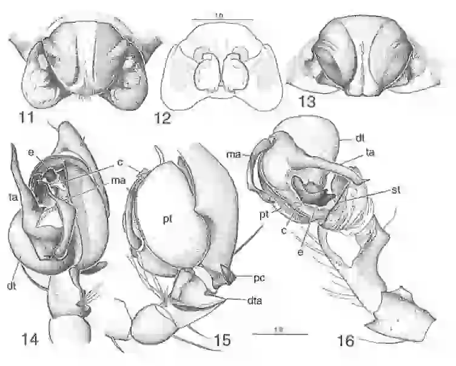
Figs. II-16: Tasmarubrius pioneer. II-13 9 epigynum, ventral (with lateral protuberances), dorsal, ventral
(w1thout protruberance~);.l4-16 fem. palp, ventral, retrolateral, expanded and displaced. c = conductor, dt =di stal
tegulum, dta =d orsal t•b• al apophys1s, e = embolus, ma = median apophysis, pc = paracymbium, pt =proximal
teg ul um, st = subtegulum, ta = tegular apophysis.
Lateral protuberances on the epigynum
(Fig s. 17-19)
Sagittal sections were made of the excised and
partly dissected epigynum of T. pioneer. The
material had been in alcohol for some time.
(photos?).
It showed that the protuberances were formed
from acellular material with a well defined space
internally which diminished as it continued out-
wards. Heavily staining comma-shaped structures, thought to be sperm cells (Fig. I 7) were
found in this space. Sectioning further into the
median p1ate , similar structures (i.e. sperm cells)
were found in the spermatheca (Figs. 18-19).
The protuberances certain1y plug the gonopores
and may also serve as external sperm reservoirs,
however the mechanism for this function is
unclear.
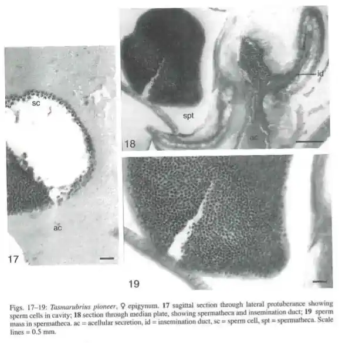
Tasmarubrius truncus, new species
(Figs. 20-34, 61)
Types: Holotype: 9 , Darcy's Bluff, [42°12'~ ,
J46°18'E], nr Tarraleah, Tasmania, 88 0 m, ptt-
fall trap #19.5, 19 February 1992, R. Brereton
(TM 13186). Paratypes: 6d', same data as halo-
type (TM 13187); 5d' (TM 13 188); d' (TM
13189); 2d' (TM 13190); d' (TM 13191); d' (TM13192); 9 , 15d' (TM 13193); ll d' (TM 13194);
2d' (TM 13195 ); 2d' (TM 13196); 3d' (TM
13197); 18d' (TM 13198); 2d' (TM 13 199); 3d'
(TM 13200); 4d' (TM 13201); 5d' (TM 13202);
2d' (TM 13203); 8d' (TM 13204); 6d' (TM
13205); 7d' (TM 13206); 4d' {TM 13207); 7d'
(TM 13208 ); 2d' (TM 13209); 5d', Hornes Dam
[42° 16 'S, 146°24'E], nr Tanaleah, 750 m, pitfall
trap, 21 January 1992, R. Brereton {TM 13210);
2d', same data (TM 132 II ); 3d' (TM 13212); 9
(TM 13213); 13d' (TM 13214); 3d' {TM 13215);
2d' (TM 13258); 3d' (TM 13 2 16); 3d' (TM
13217); 2d' (TM 13218); 9d' {TM 13219); 5d'
{TM 13220); 6d' (TM 13221); 6d' (TM 13222);
4d' (TM 13223); 3d' (TM 13224); 5d' {TM
13225); 9 , Butlers Rd [4 2° 17'S, 146°2 l' E], 700
m, 15 April1992, R. Brereton {TM 13226); 17d',
20 February 1992 (TM 13227); 14d' (TM
13228); 29 , Cradle Mtn Rd [41°32'S, 145°50'E],
800 m, 25 February 1996, G. Thompson,
C. Fewtrell (QM S30279); 9 , d' , Maggs Mtn
Platea u [41 °45'S, 146°12'EJ, 12 May 1980,
R. H. Green (QVM 13:22723-4); 9 , Scotts
Peak Dam Rd [42°59'S, 146°20'E], 300 m, 26
April 1987, N. I. P1atnick, R. J. Raven,
T. Churchill (AMNH); 9 , Lyell Hwy [42° 10' S,
145°55'E] , 400 m, 19- 20 February 1980,
A. Newton, M. Thayer {AMNH); 9 , Lake St
Clair [42°04'S, 146° IO 'E], February 1941 ,
D. Turner (TM J834); 29 , 6d' , Tussock Corner,
Maggs Mtn Rd, 18 March 1980, R. H. Green
(QVM 13:227 15- 22); 9 , Frank lin Pienie
Ground [42°12'S, 146°00'E], 29 April 19 87,
T. Churchill, R. Raven (QM S30281); 9, d' , Mt
Field National Park [42°40'S, 146°37'E],
1000 m, 30 Januar y-5 February 1980,
A. Newton, M. Thayer (AMNH); 5d' , E edge
Wombat Moor, 1060 m (AMNH); d', Mt Fie ld
National Park, Lake Dobson Rd, 7 10 m
(AMNH); 2d', W side Lake St Clair, 750 m,
25- 29 Ja nu ary 1980, A. Newton, M. Thayer
(AMNH) ; d', Rufus Cana1, 800 m, 26-28
January 19 80, A. Newton, M. Thayer (AMNH);
d' , Hartz Mts National Park, 740 m, 8-10
February 19 80, A. Newton, M. Thayer
(AMNH); d', Lachlan [42°50'S, 147°04'E],
400-600 m , April 1983 , M. Kacprzyk (TM
J2273); 9. Huon R. crossing via G eev eston
[43 ° 06 ' S, 146°46 ' E], 20 April 199 7,
G. Thomp son ( QM S35248); 9, Hartz Mt s
Arve River wa lk [4 3°09'S, 146 °48' E],
G. Thomp son, C. Fewtrell (QM S35250).
Etymology: The specific epithet is from the
Latin truncus, referring to the truncate para-cymbium.
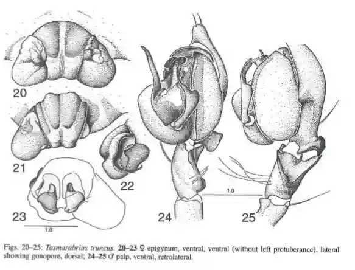
Diagnosis: The parallel epigynal ridges are
separated by a pale narrow strip ; the median
plate narrows posteriorly (cf. T. milvinus).
The paracymbium is broadly truncated
(cf. T. milvinus and T. pioneer). The median
apophysis is broadened subdistally.
Description: Female: Cl 5.2, CW 3.4, AL 8.0,
AW 4.6. Legs 4123 (I, 14.1 ; II , II.9; III, II.1;
IV, 15.0). Preening combs are present on
metatarsi II (5 tines) on m (5, 6 tines) and IV
(517 tines). Distribution of leg spines is similar
to that of milvinus but with f ew er dorsal spines
and occasionally one less ventral spine.
Epigynum (Figs. 20-23): the median plate narrows posteriorly. Posterior to the ridges there is
a slight transverse indentation (Fig. 32).
Laterally the gonopore is in a rounded indentation which is connected to a posterior indentation by a narrow groove, partly roofed over by a
dorso-lateral flange (F ig. 22). The ALS have two
major ampullate spigots (the anterior one larger) and about 21 piriform spigots with some tar ti -
pores (Fig. 26); th e PMS have one large spigot
(Fig. 27) and about 22 smaller ones, two of
which (Fig. 33) have larger fusules (?cylindrical); the PLS also have one large spigot and
about 26 smaller ones (Fig. 28).
Cephalothoracic lengths of females vary little,
from 5.0-5.8. Total length s varied from
10- 13.8. Some epigyna have one lateral protuberance missing.
Male: CL 5.0, CW 3.6; AL 4.5, AW 3.0. Legs
4123 (I, 18.4; II , 14 .5 ; IIT , 13.8; IV, 18.6).
Preening combs are present on metatarsi II
(5 tines) on III (6/6 tines) and IV (3/6 tines).
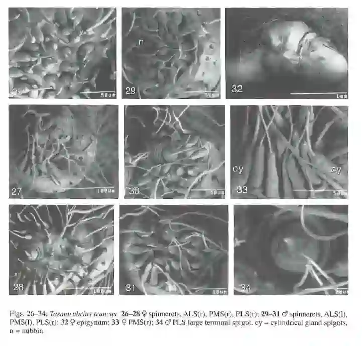
Distribution of leg spines is similar to
T. milvinus. c:J palp (Figs. 24-25): the median
apophysis curves at the mid-line thickening then
broadens sub-distally to end in a curved tip. The
paracymbium is sharply truncated. The ALS
have one major ampullate spigot and a nubbin
and about 20 piriform spigots (Fig. 29); the PMS
have one large spigot (minor ampullate) distally and about 18 small spigots (Fig. 30); the PLS
have a large spigot distally and about 20 smaller
spigots (Figs. 3 1, 34). Length 9.4- 10.4.
Distribution: T. truncus is found over a wide
area in the central plateau region of Tasmania
(Fig. 6 1).
Tasmarubrius tarraleah, new species(Figs. 3 5-40 , 42-46, 62 ).
Types: Holotype: 9, mixed forest myrtle/ tea tree, central plateau, Horne s Dam [42°16'S, 146°24'El nr Tarraleah, 750 m, pitfall trap #2.6, 19 May 1992, R. Brereton ( TM 13229). Paratypes: d , same data as holotype (TM13230); 2c:J (TM 13231); 6d' (TM J3 232); (J (TM J3233); 2d' (TM J3234); 9, 6c:J, Darcy's Bluff [42°12'S , 146° 18'E], nr Tarraleah, 880 m (TM 13235); 4c:J (TM J3236); 3d (TM 3237); 4c:J (TM J3238); 4c:J (TM J3239); 5c:J (TM J3240); 4d (TM J3241 ); 5c:J (TM 13242); 5c:J (TM J3243); 4c:J , Butlers Rd [42°l7'S 146° 21 'E] (TM J3244); 29, Lemonthyme Lodge l41°33'S, 146°06'E), 450 m, 10-12 April 1997 , G. Thompson, C. Fewtrell (QM S35249).
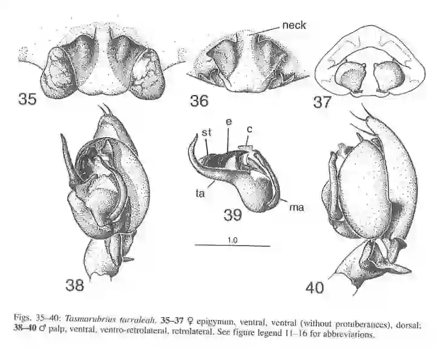
Etymology : The specific epithet is from the locality, Tarraleah.
Diagnosis: A median " neck" interrupts the anterior edge of the epigynum (cf. milvinus, pioneer and truncus). The median apophysis is long and slender without mid-line thickening; a spoon-shaped swelling sub-distally with a terminal curved tip gives it a fork-shaped appearance; the paracymbium is blunt and flanged.
Description: Female: CL 5.4, CW 3.8; AL 7.8 , AW 4.8. Legs 4123 (I, 14.8, II 12.6, ill 11.8, IV 16. 1). Preening combs are present on mctatar si II (5 tine s), Ill (4/5 t in es) and IV 3/5 tines).
The notation of leg spines is very similar to T. milvimts. Epigynum (Figs. 35-37): there is an anterior median "neck" between the broad epigynal ridges. The female from Darcy 's B lu ff is 10.0 in length and the lateral epigynal protuberances are absent (Fig. 36). Male: CL 4.3, CW 3.3, AL 4.0, AW 2.6. Legs 4 123 (I 15.3, li 13.0, ill 11. 8, IV 16.3).
Preening combs on metatarsi II (5 tines), III (5/4 tines) and IV (3/5 tines). Notation of spines similar to d T. milvinus. d palp (Figs. 38-40, 4 2-43) : the median apophysis is slender with a spoon shaped swelling subdistally before the curved tip; the paracymbium is short and truncate. There is a short ventral apophysis and a long sharp dorsal apophysis on the tibia (Fig. 40).
The spigots on the spinnerets are similar to those of other males. The single large terminal spigots on the PMS and PLS appear to have a similar structure (Figs. 44-46). Length 8.0-9.5.
Distribution: T. tarraleah was found in traps with T. truncus in the central plateau region of Tasmania (Fig. 62). Tasmarubrius hickmani, new species (Figs. 47- 60, 62) Types: Holotype: 9 , Tarraleah [42° 18'S, 146 ° 26'E], Tasmania, 6 May 1963, V. V. Hickman (QM S952). Paratype s: d, Hornes Dam [42°16'S, 146°24'E] , nr Tarraleah, 750 m, pitfall #2.6, 19 May 1992, R. Brereton (TM J3245); 29, same data as holotype (QMS30280 ); 9 , Pelham [42°35 'S , 147°00'E], 9 June 1974, J.R. Penpra se (TM J998); 9 Cradle Mtn Rd [41°32'S, 145°50'E], 800 m, 26 February 1996, G. Thompson, C. Fewtrell (QM S30282); 9 , d , Mt Field National Park [42°4 1'S, 146°43'E], 200 m, 20 May 1996, L. J. Bout in (TM J3246 ); 2d Darcy' s Bluff, central plateau l42° 12'S, 146°I O'E], nr Tarraleah, 880 m, (TM J3247); d ( TM 1324 8) ; 3d (TM J3249); 2d , Darcy' s Bluff, 880 m (TM J3250); 4d , Hornes Dam, 750 m (TM 13251 ); 2d (TM J3252); 3d (TM 13253); d (TM J3254); 3d (TM J3255); d, ex rotten logs, Lake St Clair [42°08'S, 146°10'El, 17 May 1996, L. J. Boutin ( TM J3256); d, same locality and collector, 16 May 1996 (TM J3257); 3d, Maggs Mtn [4l 0 45'S, 146°12'E], 13 June-19 September 1979, R. H. Green (QVM 13:22725-7).
Etymology: The specific patronym is in honour of Professor V. V. Hickman, doyen of Australian arachnologists, who collected these specimens.
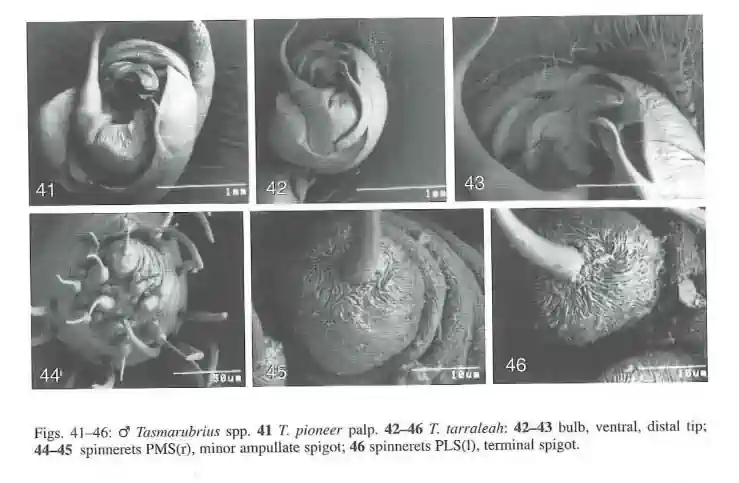
Diagnosis: The anterior edge of the epigynum is interrupted by a " neck " . The d median apophysis is long and slender. T. hickmani differs from T. tarraleah in that the epigynal plate is rounded posteriorly, the median apophysis tapers distally and the paracymbium has a posterior knob.
Description: Female: CL 6.0, CW 4.0, AL 7 .8, AW 5.0. Colour, pattern, eyes and leg spines similar to T. milvinus. Leg s 4123 (I, 15.2; II. 13.8; JTI , 13 .2; IV, 17.4). Preening combs (Fig . 57 ) are present on metatarsi II (6 tines), Ill (617 tines) and IV (617 ti n es).
Epigynum (Fig s. 50 - 52 , 58): lateral protuberances may or may not be present. The median plate has slight ridges tapering laterally. Broad insemination ducts enter the base of the spermathecae . The spigots on the spinnerets are similar to those of other <.;1<.;1. The large terminal spigots ( minor ampullate) on the PMS and PLS appear to have a similar structure (F igs. 59- 60) to each other and to those found in the female of T. tarraleah ( Fig s. 45 -4 6).
Length ll.9- 14.4. Male: CL 5.8, CW 4.5, AL 5.8 , AW 3.4. Colour, pattern, eyes, leg spines, similar to d T. milvinus. Legs 4 123 (I, 17.8 ; ll , 15.0 ; Ill , 14. 3; IV, 19.0).
Preening combs are present on metatarsi II (5 t in es ), III (5 17 tines) , IV (4 17 tines). d palp (Fig s. 5 3- 54 ). The median apophysis is l on g, slender and tapering; the paracymbium is blunt with a posterior knob . Len g th 11. 2-1 2.7.
Distribution: T. hickmani is confined to central plateau localities extending into the northern mountains (Fi g. 62). Relationships of Tasmarubrius spp. A cladistic analysis examined relationships between Tasmarubrius spp. and the following exemplars : Amaurobius fenestralis ( Stroem ) from Europe , Amphinecta milina F or s ter & Wilton from New Zealand , and the following Australian Spider s : Storenosoma terraneo Davie s , Desis s p . , Badumna Ionginqua (L. Ko c h) , Paramatachia decorata Dalma s, Forsterina sp. , Austmusia wilsoni Gray Stiphidion .facetum Simon and an undescribed dictynid, Dictyni da e A. Out group comparison was with Wandella barbarella Gray, an Australian filistatid. A data matrix (Table 2) was assembled for these taxa (generic names abbreviated) using 23 characters. These are numbered according to the sequence in the matrix and the designated states are in brackets.
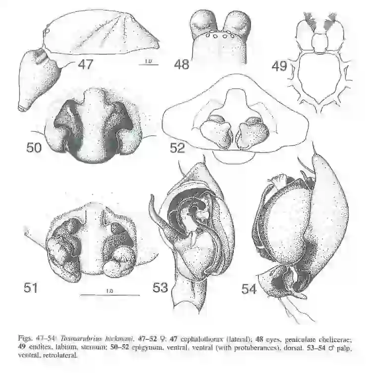
Unknown characters are represented by " ?", inapplicable characters by " -" . Characters and character states
1. Retro-marginal cheliceral teeth: 2 + (0); 2 (1 ); 1 (2); 0 (3) .
2 . Cheliceral Iamina: absent (0) ; present (1).
3. Promarginal cheliceral teeth: 3 + (0); 3 (1); 2 (2); 0 (3 ).
4. Filamentous seta at base of fang: absent (0); short (l ); l on g (2).
5. Tarsal trichobothria: absent (0); 2 + (1 ); double row (2).
6. Metatarsal trichobothria: 1- 2 (0) ; 2 + ( 1).
7. Metatarsal preening combs : absent (0) ; present ( 1).
8. Feathery hairs: absent (0) ; present ( I) .
9. Clibellum : present (0); absent (1 ).
10. Cribellar spiraling field s: 2 (0); I (1).
11. Cribellar fusules : longitudinally ribbed (0); annul at ed (1 ) .
12. Fusules on para cribellar base: single (0); grouped ( I); absent (2).
13. 9 Map on ALS: 2 (0); 1 and nubbin ( I); 1 (2).
14. 9 Position of Map on ALS: lateral (0); anterior ( I).
15 . 9 Gonopores : median (0); lateral (1 ).
16. 9 Lateral protuberances on epigynum: absent (0); present ( 1).
17. 9 Anterior margin of epigynum: continuous (0); interrupted by neck ( 1).
18. d Coxa of palp with stridulatory ridges: absent (0); present (I ).
19. d Tibial apophysis with dorsal branch : absent (0); present ( 1).
20 . d Dorso-retrolateral proximal paracymbium: absent (0); long, finger- like (1) ; short, blunt (2).
21. d Median apophysis: absent (0); membranous (1); irregular, sclerotized (2) ; long, slender, sclerotized (3).
22. d Conductor: absent (0) ; T-shaped (1 ); large S-shaped (2); falciform ( 3) ; rounded (4).
23. d Direction of embolus: straight (0); clock - wise (I) ; anticlockwise (2).
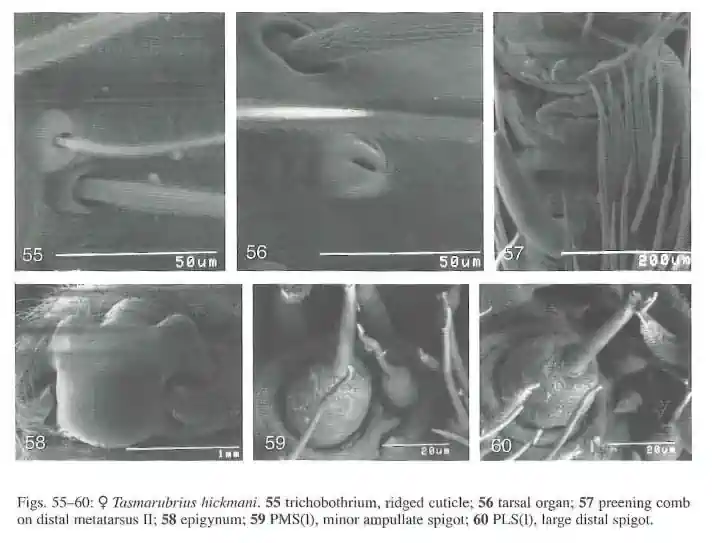
Data analysis: The data matrix (Table 2) was used in Paup version 3 .1 . 1. An heuristic search of the data with I0 random-addition sequences and TBR branch-swapping generated four most parsimonious trees; length = 50 , CI = 0.760, Excluding uninformative characters =0 .727, RI = 0 .8 59, RC = 0 .653. Semi-strict consensus of the most parsimonious trees is shown (Fig. 63).
The analysis was repeated using Hennig 86 with identical results. In this case the command mh* which applies branch-swapping to trees (each found after different passes through the data) and retains the shortest trees, was used.
The trees retained were then passed to the extended branch-swapper, bb*. The most parsimonious tree, closest to the semi-strict consensus tree, with characters and character states mapped , is shown (Fig. 64). This cladogram was prepared using CLADOS version 1.2 with DELTRAN optimization. Results There is close agreement between the cladograms (Figs. 63 -64). Tasmarubrius emerges as a derived clade within the Amaurobiidae.
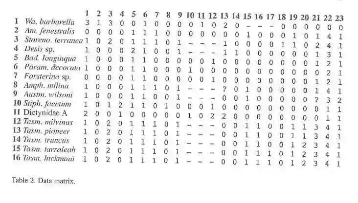
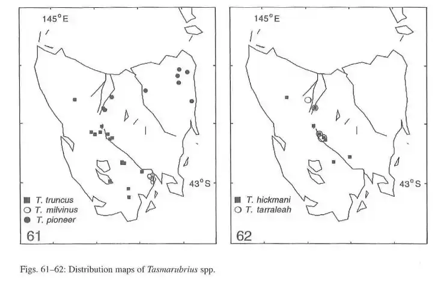
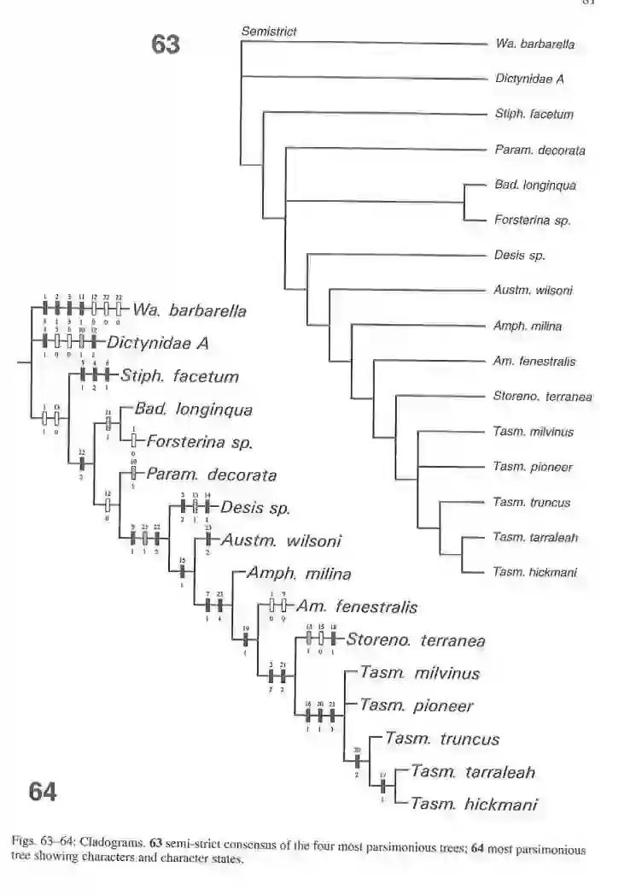